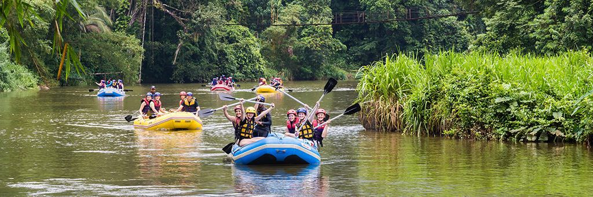
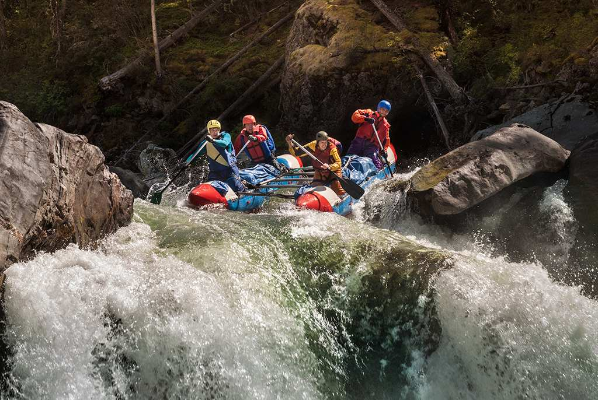

Tucker Rafting, our mission is to deliver unforgettable adventures on the water while putting safety and stewardship of the river first. Adventure, community, and respect for nature guide everything we do.


Tucker Rafting, our mission is to deliver unforgettable adventures on the water while putting safety and stewardship of the river first. Adventure, community, and respect for nature guide everything we do.
Tucker Rafting was founded by a small group of river guides who believed that everyone deserves the thrill of whitewater. What started as a single raft and a handful of local trips has grown into a company trusted by adventurers from around the globe, all while staying true to our roots on the river.